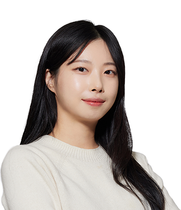

업계 전반에 걸친
디자인 경험을 쌓을 수 있는 곳
디자인 경험을 쌓을 수 있는 곳
패키지 디자인
강예지

Q1. 어떤 업무를 담당하고 계신가요? 하루 일과와 함께 소개해 주세요.
안녕하세요. 롯데중앙연구소에서 제품 용기 디자인 개발을 담당하고 있는 강예지 입니다.
팀 내에서 음료 페트 용기부터 샐러드 용기까지 롯데 식품사의 다양한 용기 디자인을 다루고 있습니다. 출근하면 현재 참여하고 있는 프로젝트의 디자인 작업을 시작합니다. 프로젝트 초기에는 주로 경쟁 제품과 시장 동향을 파악할 수 있는 시장 조사를 진행하고, 디자인 컨셉이 정해지면 스케치, 모델링, 렌더링 등의 디자인 작업을 진행합니다. 디자인이 완료된 후에 양산 단계에서 발생하는 이슈로 디자인 수정이 필요한 경우 대응하기도 합니다.
팀 내에서 음료 페트 용기부터 샐러드 용기까지 롯데 식품사의 다양한 용기 디자인을 다루고 있습니다. 출근하면 현재 참여하고 있는 프로젝트의 디자인 작업을 시작합니다. 프로젝트 초기에는 주로 경쟁 제품과 시장 동향을 파악할 수 있는 시장 조사를 진행하고, 디자인 컨셉이 정해지면 스케치, 모델링, 렌더링 등의 디자인 작업을 진행합니다. 디자인이 완료된 후에 양산 단계에서 발생하는 이슈로 디자인 수정이 필요한 경우 대응하기도 합니다.
Q2. 담당 업무에 필요한 역량은 무엇이고, 그 역량을 기르기 위해 어떤 노력을 하셨나요?
먼저 식품 패키지 디자인을 다루는 만큼 식품 분야에 대한 관심을 가지고 트렌드를 파악하는 것이 중요합니다. 그리고 디자인 컨셉을 도출하는 본인만의 인사이트와 디자인 구현 능력이 필요합니다. 입사 전부터 다양한 프로젝트를 수행해 보았던 경험이 이런 역량을 쌓고 업무 완성도를 높이는 데 도움이 되었습니다. 디자인 컨셉 도출부터 디자인 완료까지 일련의 디자인 과정을 완수해 보는 것이 많은 도움이 되는 것 같습니다. 그리고 제품 분석뿐만 아니라 새로운 플랫폼, 팝업스토어, 서비스 등 인사이트에 영감을 줄 만한 다양한 매체를 접하려고 노력하고 있습니다.
Q3. 일을 하면서 보람과 뿌듯함을 느낄 때는 언제인가요?
제가 작업한 디자인이 출시되어 좋은 반응을 얻었을 때 보람을 느낍니다. 편의점이나 마트 매대에서 제 디자인을 발견했을 때 감회가 새롭기도 하고, 주변 지인에게 좋은 반응을 듣거나 실제로 소비하고 있는 사람들을 우연히 마주쳤을 때 뿌듯함을 느끼곤 합니다. 사실 제품이 개발되고 출시되기까지, 여러 현실적인 제약들과 유관부서 간의 협의 과정을 통해야 하기 때문에 디자인이 무사히 출시로 이어지는 것만으로도 기쁜 일인 것 같습니다!
Q4. 롯데중앙연구소 입사를 결심하게 된 이유는 무엇인가요? 입사하길 잘했다고 느끼는 순간이 있다면요?
저는 기존 롯데칠성음료에서 근무하다 롯데 식품사 디자인센터 통합으로 롯데중앙연구소에서 일하게 되었습니다. 처음 롯데칠성음료에 입사할 때는 다양한 음료, 주류 브랜드를 보유하고 있는 곳에서 디자인할 수 있는 점을 보고 입사하게 됐는데요, 롯데중앙연구소에 온 후 롯데 식품사의 디자인을 모두 할 수 있게 되면서 다양한 포트폴리오를 쌓을 수 있는 장점이 더 커진 것 같습니다.
그리고 제품 개발 단계에 디자인 팀도 함께 참여해 선행 디자인을 제안해 볼 수 있는 기회를 가질 수 있게 되면서, 디자이너로서 R&D 직군의 연구원분들과 접점이 많아진 점도 큰 장점이라고 생각합니다.
그리고 제품 개발 단계에 디자인 팀도 함께 참여해 선행 디자인을 제안해 볼 수 있는 기회를 가질 수 있게 되면서, 디자이너로서 R&D 직군의 연구원분들과 접점이 많아진 점도 큰 장점이라고 생각합니다.